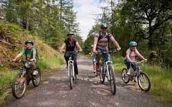
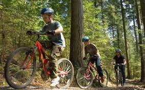
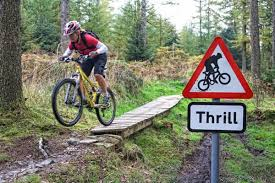

Guide to cycling in the Lake District
The Lake District is a beautiful place to get out and explore but the roads can get very busy and dangerous to cycle on, particularly in the summer holidays. When the sun is shining there are few places we would like to be than cycling next to a lake or on a trail in the trees. But the problem is, where do you go? Well to answer that we have put together some of our favourite cycle rides for all abilities to suit everyone. Click on the picture to go straight to the experience level you want.
Beginner Cycle Routes
Beginners Routes Overview
In the beginners section you will find a range of routes which are suitable for families, with even the smallest riders on balance bikes. These routes have proper paths which are relatviley flat to make them accessable for all abilities. They are not too long and have been chosen with plenty of interesting places to stop and play or have a picnic in mind.
Intermediate Cycle Routes
Intermediate Routes Overview
In the intermediate section you will find a range of routes which are suitable for more confident riders that are able to tackle small inclines and slightly steep decents. They are slightly longer and will give that sence of achievement once you have finnished.
Advanced Cycle Routes
Advanced Routes Overview
In the advanced section you will find a range of routes which are challenging and sutible for confident experienced riders. These routes have some steep assents and steep gravelly decents which will challenge even the most experienced riders.